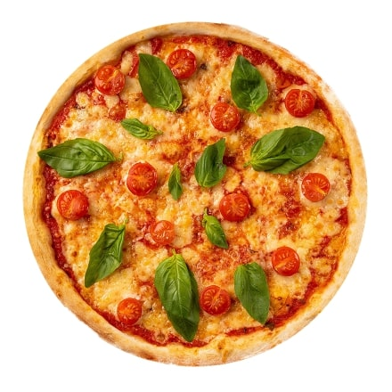
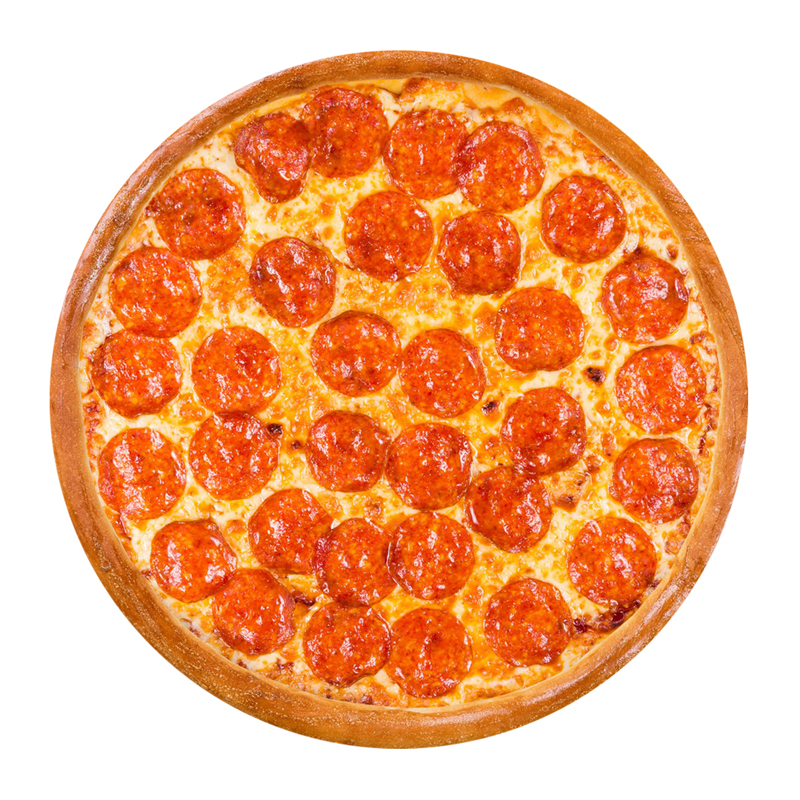
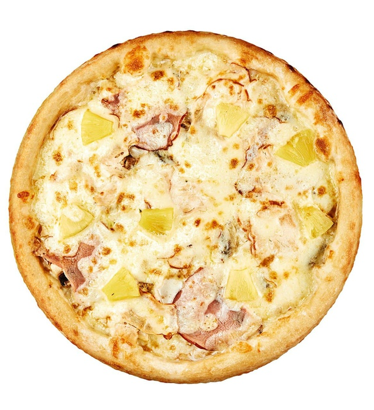

Каталог страв
| Назва страви | Фото | Опис | Ціна | Замовити |
|---|---|---|---|---|
| Піца Маргарита |  | Піца «Маргарита» — це типова неаполітанська піца, виготовлена з помідорами Сан-Марцано, сиром моцарелла, свіжим базиліком, сіллю та оливковою олією. | 100 грн | |
| Піца Пепероні |  | Пепероні — гострий різновид салямі в італійській та американській кухні, яка своїм походженням зобов'язана гострій ковбасі з півдня Італії. | 120 грн | |
| Піца Гавайська |  | Гавайська піца — піца, що готується з використанням білого соусу, сиру, ананасів і курки. | 110 грн |
Розділ 2
Текст розділу 2
Розділ 3
Текст розділу 3